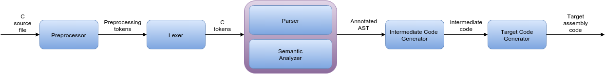
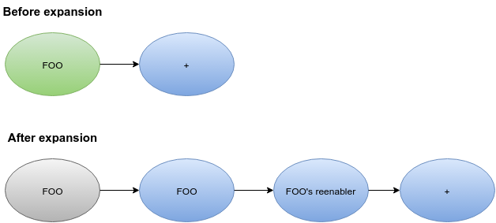
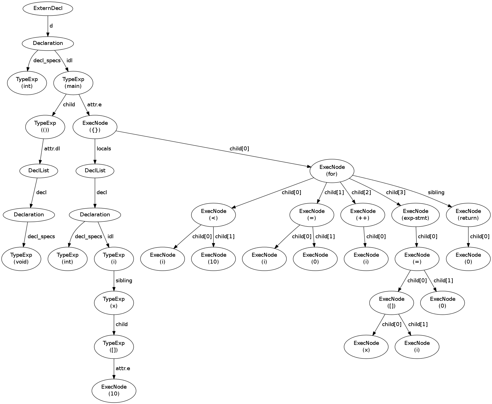
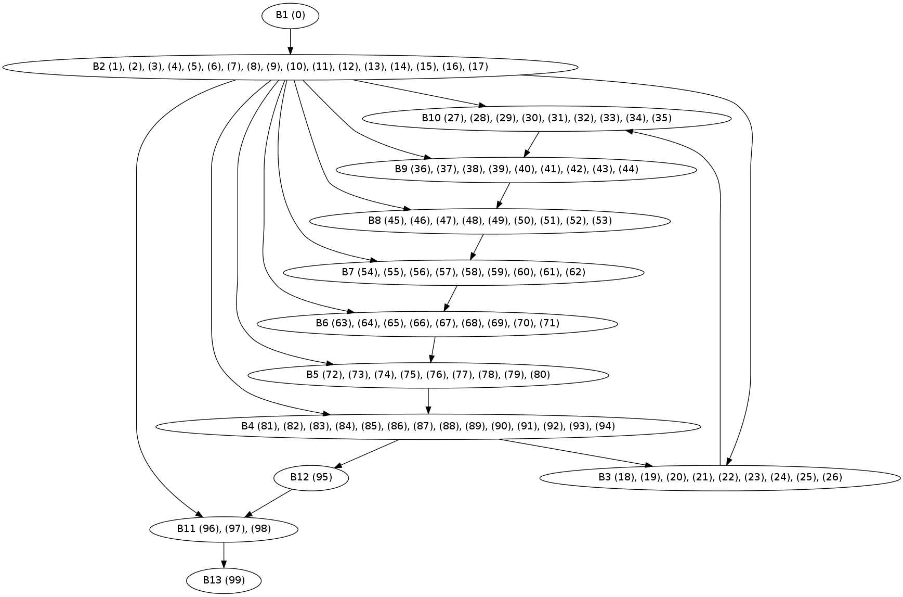
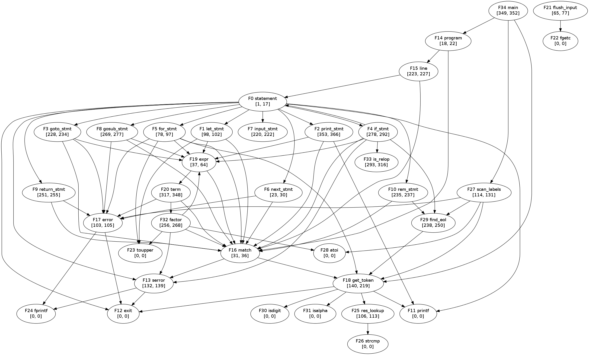

Luxcc usage and internals documentation. I will try to maintain this document updated as things evolve.
Index
1.Introduction
LuxCC is a small compiler for a subset of the C programming language.
This subset is basically C89 (without floating-point numbers and some obsolete or uncommon features) plus a few C99 features.
The compiler comes along with other tools that complete the development toolchain (assemblers, linkers, and VMs).
LuxCC is able to compile itself and also other non-trivial programs (see the tests for examples).
LuxCC currently targets:
- x86 32-bit
- x86 64-bit
- LuxVM 32-bit
- LuxVM 64-bit
The compiler is intended to run/target Linux only. Porting it to
Windows would require some considerable amount of work (I suppose
porting it to other Unix-like OS should be easier).
This is a one-man project developed mainly for educational purposes
(and fun!); it is not intended to replace any existing compiler/tool.
2.1 Building/Installing
First of all go to the base working directory. Once there, you can run make (or make all) to build the core compiler and all of the tools.
After that you can run make install or, alternatively, you can execute the compiler and everything else from within the base working directory.
System's libc and .conf files
The x86 and x64 targets use the system's implementation of the C standard library.
Before do anything, check out the .conf file for your platform (x86.conf or x64.conf) located at src/luxdvr/ and make sure that the files exist in the indicated paths. For example, in x86.conf you will see
libc.so.6: /lib/i386-linux-gnu
meaning that the compiler driver will look for the file libc.so.6 (the C standard library) at the directory /lib/i386-linux-gnu. If said file is not located there, modify the line to the correct location (you can compile a dummy program with gcc and the -v option to see where gcc is pulling a specific file from). The directories listed in x86.conf and x64.conf
are the directories where the files were installed by default in my Linux
distribution (Ubuntu 12.04 32-bits and Ubuntu 14.04 64-bits
respectively).
musl libc
Alternatively, you can use the lightweight musl standard library that is compatible with my linker (luxld) and works very well. If you have installed musl, you can indicate the driver to use it with the command-line switch -use-musl.
2.2 Basic usage
In the following examples I will assume that you have run make install (replace luxdvr for src/luxdvr/luxdvr otherwise). I will also assume that the target is x86 (the default).
Note: command-line
arguments must be passed individually, that is, if you want to pass the
arguments A, B, and C you must write `-A -B -C' instead of `-ABC'.
- Full compile (compile, assemble, and link):
$ luxdvr test.c -o test
- Compile and assemble but do not link (by default output goes to test.o):
$ luxdvr -c test.c
$ luxdvr -S test.c -o test.s
- Preprocess only (by default output goes to stdout):
$ luxdvr -E test.c
- Perform static analysis only:
$ luxdvr -analyze test.c
2.3 Dumping and Drawing Stuff
I will use the program src/tests/execute/ackermann.c as an example. To graph the .dot files you will need the dot program that is installed with the Graphviz package.
$ luxdvr -dump-tokens src/tests/execute/ackermann.c
$ cat src/tests/execute/ackermann.tok
src/tests/execute/ackermann.c:2:0
=> token:
INT
lexeme: `int'
src/tests/execute/ackermann.c:2:4
=> token:
ID
lexeme: `printf'
src/tests/execute/ackermann.c:2:10
=> token:
LPAREN lexeme: `('
src/tests/execute/ackermann.c:2:11
=> token:
CONST
lexeme: `const'
src/tests/execute/ackermann.c:2:17
=> token:
CHAR
lexeme: `char'
src/tests/execute/ackermann.c:2:22
=> token:
STAR
lexeme: `*'
...
- Dump function intermediate code (x86 only)
$ luxdvr -dump-ic ackermann src/tests/execute/ackermann.c
$ cat src/tests/execute/ackermann.ic
(0) jmp L0
(1) L0:
(2) t1 = m == 0
(3) cbr L2, t1, L3
(4) L2:
(5) t2 = n + 1
(6) ret t2
(7) jmp L1
(8) jmp L4
(9) L3:
...
$ luxdvr -dump-ast src/tests/execute/ackermann.c
$ dot -Tpng src/tests/execute/ackermann.ast.dot -o ackermann_ast.png
- Dump function CFG (x86/x64 only)
$ luxdvr -dump-cfg ackermann src/tests/execute/ackermann.c
$ dot -Tpng src/tests/execute/ackermann.cfg.dot -o ackermann_cfg.png
- Dump program call-graph (x86/x64 only)
$ luxdvr -dump-cg src/tests/execute/ackermann.c
$ dot -Tpng src/tests/execute/ackermann.cg.dot -o ackermann_cg.png
Type luxdvr -h to see additional command-line options.
3. Internals
3.1 Compiler Overview

3.2 Preprocessor
The preprocessor (pre.c)
constitutes the first pass of the compiler. It is NOT a
standard-compliant preprocessor. It only supports a subset big enough
to allow self-compilation (that is, it only supports things that the
compiler uses). The grammar recognized by the preprocessor's parser can
be found in EBNF notation at pre_grammar.txt. Some of the most important missing features are:
- The line, error, pragma directives.
- The stringification ('#') and concatenation ('##') operators.
- The constant expressions (constant_expression in the grammar) that the preprocessor supports are somewhat limited:
- all the macro names that appear in expressions must expand
directly to decimal constants (undefined macro names are replaced for
zero).
- the operators ?:, &&, and || don't behave in a short-circuit fashion.
- all the integer constants that appear in expressions must be decimal.
- all operations are performed in signed long long type.
Basic operation:
1) Read and buffer the source file.
2) Perform line splicing.
3) Tokenize the buffered file. The main functions in charge of this are tokenize() and get_token(). After this, the
preprocessor is left with a list of preprocessor tokens (PreTokenNode structs) as its main
input. The buffered file is freed.
4) Parse the
preprocessing token list. The parser (the preprocessor's one) not only
check for gramatical correctness, it also executes directives, expands
macros, and marks the tokens that must be skipped by the lexer.
5) Return the resulting list of preprocessing tokens.
As mentioned previously, the main data structure that the preprocessor
manipulates is a linked list of PreTokenNode nodes:
typedef struct PreTokenNode PreTokenNode;
struct
PreTokenNode {
PreToken token;
char *lexeme, *src_file;
int src_line, src_column;
char next_char;
char deleted;
PreTokenNode *next;
};
- token: enumeration value
indicating the preprocessing token. The possible values can be found in
pre.h.
- lexeme: token's lexeme.
- src_file: source file of which
this preprocessing token comes from.
- src_line: lexeme's last char
line number.
- src_column: lexeme's first char
column number.
- next_char: used with
function-like macros to distinguish between "name(" and "name (", that
is, to know if the left parenthesis is immediately next to the macro
name or not.
- deleted: boolean value
indicating if this node was deleted by the preprocessor. If it's true,
the lexer will skip over it.
- next: pointer to next
preprocessing token.
The token type PRE_TOK_MACRO_REENABLER
may require some extra explanation. It's used to avoid infinite
macro expansions. When a macro is expanded, a node of this type is
inserted right after the macros's body, and the macro is marked as
'disabled' in the macro symbol table. If the name of the macro is
encounter in the body, it will not be expanded. The node inserted after
the macro's body will reenable the macro marking it back as 'enabled'
in the macro symbol table.
For example, having the macro definition
#define FOO FOO
the code
FOO + ...
will be seen as follow before and after expansion (green ovals
are enabled macro names, blue ovals are normal preprocessing tokens,
and gray ovals are nodes marked to be skipped by the lexer):

The above is an example of a self-referential
macro. This mechanism works with indirect self-referential macros
too. For example, having the macro definitions
#define X (4 + y)
#define Y (2 +
x)
the code
X
X
will expand as follows
X ==> (4 +
Y) ==> (4 + (2 * X)) // X is disabled in this last step
Y ==> (2 *
X) ==> (2 * (4 + Y)) // Y is disabled in this last step
A note
about macro arguments:
The standard requires that all arguments to a macro be completely
macro-expanded before being substituted into the macro body (6.10.3#1). The current
implementation doesn't expand macro arguments, and that can change the
results in certain particular cases:
- Macros used in arguments, whose expansion contain unshielded
commas.
#define
foo a,b
#define bar(x) lose(x)
#define lose(x) (1 + (x))
...
bar(foo) // should expand into
lose(a,b) and produce an 'parameter number mismatch' error;
// instead, it expands into (1 + (a,b))
#define
f(x) x*2
...
f(f(1)) // should expand f(1) and
substitute that into the definition of f, yielding 1*2*2;
// instead, it expands into f(1)*2
For more info see here
(cpp handles this right).
3.3 Lexer
The lexer (lexer.c) is the
responsible of convert preprocessing tokens into C tokens. This
corresponds roughly to the translation phases 5, 6, and part of 7 as
described by the standard.
Basic operation:
1) Take the list of preprocessor tokens as produced by the preprocessor
and analyze each node individually.
2) If the node is marked as 'deleted', ignore it and go to the next one.
3) If the node is not marked as 'deleted', create a new C token node
according to the node type:
- Preprocessing EOF tokens are simply converted into C EOF tokens.
- Preprocessing punctuator tokens are converted by using their
lexeme to index into a table and obtain the corresponding C token type.
- Preprocessing number tokens are examined to see if their lexeme
constitutes a valid C integer constant (octal, decimal, or hexadecimal,
with or without sign/width suffix/es). The conversion string to integer is not yet
performed here.
- Preprocessing identifier tokens before being assigned the token type TOK_ID are looked up into a table to see
if their lexeme constitutes a keyword.
- Preprocessing character tokens are converted to the equivalent
numeric representation (yet in string form). Also, any escape sequence
is substituted.
- Preprocessing string literal tokens are concatenated, and the
individual strings get their double quotes removed and go through
escape sequence substitution.
- Preprocessing 'other' tokens are ignored.
4) Free the list of preprocessing tokens.
After the lexer analyzes all the nodes it returns a list of C tokens.
Each C token node has the form:
typedef struct
TokenNode TokenNode;
struct
TokenNode {
Token token;
char *lexeme, *src_file;
int src_line, src_column;
TokenNode *next;
};
- token: enumeration
value indicating the C token. The possible values can be found in lexer.h.
- lexeme: lexeme
resultant of lexer's work.
- src_file, src_line,
src_column: same as PreTokenNode's
members.
- next: pointer to
next C token node.
3.4 Parser
The parser (parser.c) is a hand-coded recursive descent parser. It takes as input the list
of C tokens returned by the lexer and try to recognize its syntactic
structure. The grammar recognized by the parser can be found in EBNF
notation at grammar.txt.
The parser also controls the semantic analyzer. After it determines the
syntactic correctness of a
construct, it generally calls functions of the semantic analyzer to
determine the semantic
correctness of the same construct.
The parser doesn't do any form of error recovery. When it encounters a
syntax error it just reports it and dies.
The output of the parser is an abstract syntax tree (AST) of some form.
The ASTs that represent declarations are composed of the node types TypeExp, Declaration, DeclList, and ExternDecl. The ASTs that represent
statements and expressions are composed uniquely of the node type ExecNode. The node definitions can
be found in parser.h.
Next is an example of a small C program and its corresponding AST
as generated by the parser:
int main(void)
{
int i, x[10];
for (i = 0; i < 10; i++)
x[i] = 0;
return 0;
}

3.5 Semantic Analyzer
The semantic analyzer performs static analysis over the source code
making sure it doesn't violate any constraint. It's composed of
three parts: the declaration analyzer (decl.h/decl.c), the expression
analyzer (expr.h/expr.c), and
the statement analyzer (stmt.c/stmt.h).
The following sub-sections explain each part in detail.
The
Declaration Analyzer
The main tasks of this part are:
- Manage scopes and name spaces. A new scope is created when
encountering the left parenthesis of a function declarator or the left
brace of a compound statement and is destroyed when encountering the
corresponding right parenthesis/brace. This part of the semantic
analyzer handles three of the four name spaces available (the remaining
being handled by the statement analyzer). It handles the ordinary
identifiers and tags name spaces using a scoped symbol table, and the
union/struct members name space using a stack of union/struct
descriptors. Before installing an identifier in any of the names spaces,
it checks for clashes with previous declarations that define the same
identifier.
- Check that the types used in declarations make sense and that
things like char int i, int
a[5][], int x(void)[5], etc, don't go unnoticed.
- Help the parser with typedef-names. typedefs make the C grammar
hard to parse without some context information. This part of the
analyzer gives that context to the parser through the is_typedef_name() function.
- Check initializers. Objects must be initialized by expressions of
the correct type and, in the case of objects with static storage
duration, those expressions must be computable at compile-time.
- Enforce type and linkage agreement between external declarations.
This part also gives some misc utilities to other parts of the
compiler, like is_X() and
get_X() kind of functions
and a type stringification function used for diagnostics.
Type derivation, qualifiers, and more...
Array type derivation
6.2.5#20
An array type is said to be derived from its element type, and if its
element type is T , the array type is sometimes called "array of T ".
Example:
int x[10]; //
derivation: int ==> int[10]
Function type derivation
(6.2.5#20)
A function type is said to be derived from its return type, and if its
return type is T , the function type is sometimes called "function
returning T ".
Example:
int foo(); //
derivation: int ==> int()
Pointer type derivation
6.2.5#20
A pointer type may be derived from a function type, an object type, or
an incomplete type, called the referenced
type. A pointer type
describes an object whose value provides a reference to an entity of
the referenced type. A pointer type derived from the referenced type T
is sometimes called "pointer to T ".
Example:
int *x; //
derivation: int ==> int*
Derived declarator types
6.2.5#24
Array, function, and pointer types are collectively called derived declarator types.
Derived declarator types have one of the operators TOK_STAR, TOK_SUBSCRIPT, or TOK_FUNCTION.
Type category
6.2.5#24
A type is characterized by its type
category, which is either the outermost derivation of a derived type
(as noted above in the construction of derived types), or the type
itself if the type consists of no derived types.
The type category can be obtained using the function get_type_category().
Examples:
int x; // type
category: int
int *x; // int
==> int*, type category: pointer
^
outermost derivation
int *x[10]; //
int ==> int* ==> int*[10], type category: array
^
outermost derivation
int (*x)(); //
int ==> int() ==> int(*)(), type category: pointer
^
outermost derivation
int (*x)[10];
// int ==> int[10] ==> int(*)[10], type category: pointer
^
outermost derivation
int
(*x[10])(); // int ==> int() ==> int(*)() ==> int(*[10])(),
type category: array
^
outermost derivation
int x[5][10];
// int ==> int[10] ==> int[5][10], type category: array
^
outermost derivation
Qualified and unqualified
versions of a type
6.2.5#26
The qualified or unqualified versions of a type are distinct types that
belong to the same type category and have the same representation and
alignment requirements.
One can obtain the type qualifier (if any) of a declaration using the function get_type_qual() on the declaration specifiers of the declaration.
Examples:
unqualified
qualified
int x;
const int x;
int
*x; int *const x;
int
(*x)[10]; int (*const x)[10];
A derived type is not qualified by the qualifiers (if any) of the type
from which it is derived.
const int *x; // const int
==> const int*, type category: pointer (it is not a qualified type,
it is a pointer to a qualified type)
Type qualifiers and typedefs
6.7.3#8
If the specification of an array type includes any type qualifiers, the
element type is so-qualified, not the array type. If the specification
of a function type includes any type qualifiers, the behavior is
undefined.118)
118): Both of these can occur through the use of typedefs.
The function replace_typedef_name() takes care of typedef names and type qualifiers applied to typedef names in declarations.
Examples:
1)
typedef int *t[10][20][30];
const t x;
the derivation of t is
int ==> int* ==> int*[30] ==> int*[20][30] ==> int*[10][20][30]
by 6.7.3#8
const applied to int*[10][20][30]
const applied to int*[20][30]
const applied to int*[30] <- the element type of [30] is pointer
so x has type int *const[10][20][30]
Note that this can only happens through the use of typedef (it is not possible to apply const
to an array directly). Just as a note (the following is not supported
by the compiler), C99 added a syntax to declare parameters with array
type that are constant after adjustment:
T A[qualifier-list size]
which is equivalent to
T *qualifier-list A
2) When const
appears in a declaration where the type specifier is a typedef-name
that specifies a derived declarator type and the declarator part of the
declaration also specifies a derived declarator type, const applies to the part of the full declarator that is provided by the typedef-name's declarator:
typedef int *t;
const t *x; // x has type 'int *const*' instead of 'int **const'
3) It is not possible to apply const directly to a function without the use of typedefs:
typedef int f(void);
const f x1; // invokes UB (in gcc terms, x1 has type int __attribute__((const)) int(void))
The
Expression Analyzer
The main tasks of this part are:
- Make sure that operators have valid operands. This includes,
depending on the specific operator, ensuring that operands have the
right type, that are modifiable, that
have the right order and number, etc.
- Assign result types to expressions.
Also in this part integer constants are converted from string to
integer form and enumeration constants are converted to integer
constants.
In addition, this part defines a lot of utility functions that are used through
the whole compiler, as for example: get_sizeof() and get_alignment(), eval_const_expr(), get_type_category(), and is_X() type of functions.
The type TOK_ERROR is
used when an expression is determined to be invalid. Most of the
functions before do anything check to see if any of their operands have
this type. If there are one or more operands with this type, they just
set TOK_ERROR as their own result type and then return. This is done so cascades of spurious errors can be avoided.
The
Statement Analyzer
This is the simplest of the three parts. Its main tasks are:
- Assure that the expressions used in statements have the right
type and, when necessary, are constant.
- Implement the remaining name space: the label names name space (a simple
hash table is used to implement it).
- Make sure that the statements are used in places that they are
allowed to be used, more concretely, that breaks are only used inside of switches and loops and that continues are only used inside
of loops.
A stacked symbol table is used to implement the switch statement. Forward gotos are annotated and
resolved at the end of each function.
3.6 Intermediate Code Generation
After the code has been determined to be syntactically and semantically correct, the intermediate code generation pass begins.
The form of intermediate code used is three-address code (TAC) where the most of the operations take some variation of the form x = y op z (each operand is called an 'address').
The particular version of TAC used in the compiler has the following operations (OpKind enumeration values):
Opcode
| Targets
| Source 1
| Source 2
| Meaning
|
OpAdd
| a
| b
| c
| a = b+c |
OpSub
| a
| b
| c
| a = b-c |
OpMul
| a
| b
| c
| a = b*c |
OpDiv
| a
| b
| c
| a = b/c |
OpRem
| a
| b
| c
| a = b%c |
OpNeg
| a
| b
| -
| a = -b
|
OpCmpl
| a
| b
| -
| a = ~b
|
OpNot
| a
| b
| -
| a = !b
|
OpSHL
| a
| b
| c
| a = b<<c
|
OpSHR
| a
| b
| c
| a = b>>c
|
OpAnd
| a
| b
| c
| a = b&c
|
OpOr
| a
| b
| c
| a = b|c
|
OpXor
| a
| b
| c
| a = b&c
|
OpEQ
| a
| b
| c
| a = b==c
|
OpNEQ
| a
| b
| c
| a = b!=c
|
OpLT
| a
| b
| c
| a = b<c
|
OpLET
| a
| b
| c
| a = b<=c
|
OpGT
| a
| b
| c
| a = b>c
|
OpGET
| a
| b
| c
| a = b>=c
|
OpCh
| a
| b
| -
| a = (char)b
|
OpUCh
| a
| b
| -
| a = (unsigned char)b
|
OpSh
| a
| b
| -
| a = (short)b
|
OpUSh
| a
| b
| -
| a = (unsigned short)b
|
OpLLSX
|
a
|
b
|
-
|
a = (sign extend to long long)b
|
OpLLZX
|
a
|
b
|
-
|
a = (zero extend to long long)b
|
OpAsn
| a
| b
| -
| a = b
|
OpIndAsn
| -
| b
| c
| *b = c
|
OpAddrOf
| a
| b
| -
| a = &b
|
OpInd
| a
| b
| -
| a = *b
|
OpLab
| a
| -
| -
| Define label a
|
OpJmp
| a
| -
| -
| Unconditionally jump to label a
|
OpCBr
| a
| b
| c
| If b is TRUE jump to label a, else to label c
|
OpSwitch
| -
| b
| c
| Switch over b (c == # of cases)
|
OpCase
| a
| b
| c
| a == case's value, b == case's label (c is TRUE when `default')
|
OpArg
| -
| b
| c
| Pass b as an argument (c == sizeof(b))
|
OpCall
| a
| b
| c
| a = b() (c == # of args)
|
OpIndCall
| a
| b
| c
| a = (*b)() (c == # of args)
|
OpRet
| -
| b
| -
| Return value b to the caller
|
OpNOp
|
-
|
-
|
-
|
No operation
|
There
are various ways to implement TAC: as quadruples, as triples, as
indirect triples, and probably some other ways. Quadruples are about
the most straightforward way to implement them, and so this is the way
that was chosen.
Quadruples are defined by the type Quad that has the following form:
typedef struct Quad Quad;
struct Quad {
OpKind op;
Declaration *type;
unsigned tar, arg1, arg2;
};
- op: the operation represented by this quad.
- type: the type over which this quad operates (only relevant for some operations).
- tar, arg1, arg2: target operand and source operand 1 and 2. Note that for some operations tar loses its 'target' meaning and acts as other argument.
The intermediate code generator transforms the code from ASTs to an array of quadruples (ic_instructions). The code uses the function macro instruction() to access a particular quad in the array.
The tar, arg1, and arg2 members of Quad are indexes into an array of addresses (ic_addresses). An address is represented by the type Address. The code uses the function macro address() to access a particular address in the array. An address can be of one of the following kinds:
- IConstKind: an integer constant. Uses the fields Address.cont.val and Address.cont.uval.
- StrLitKind: a string literal. Uses the fields Address.cont.str.
- IdKind: an identifier. Uses the fields Address.cont.var.e (the AST's id expression node) and Address.cont.var.offset (for local variables, offset into stack frame).
- TempKind: a temporary. The compiler creates temporaries when it needs to store intermediate results.
Each Identifier and temporary address has a unique nid (numeric identifier) and sid
(string identifier). The analysis that are performed later become
easier (and faster) if we can represent each identifier as a bit into a
bit-vector. The nid represents the identifier's position into such
vector. The code uses the macro address_nid()
to obtain the nid of an address. The sid is the name of the identifier
in string form and is mostly used to print debug information. To map a
nid to a sid the code uses the array nid2sid_tab.
The intermediate code generator takes note of address-taken variables (for later use in analyses) in the bit-vector address_taken_variables.
Also in this phase, offsets are assigned to local variables and
parameters. This is a machine-dependent task, but is done here anyway
for convenience.
ic_simplify() folds constants (and conditional jumps acting on constants) and performs simple strength reduction.
Graphs
After
the quads for one function have been generated, a control flow graph
(CFG) is constructed. A CFG is composed of nodes called basic blocks
(BB), each BB being a sequence of jump-free (from/into- the BB) instructions.
The jump instructions (at the end of BBs) are used to link together the
graph nodes. The code uses the macro cfg_node() to access a particular CFG node.
A CFG node is represented by the type CFGNode:
typedef struct CFGNode CFGNode;
struct CFGNode {
unsigned leader, last;
GraphEdge out;
GraphEdge in;
BSet *UEVar;
BSet *VarKill;
BSet *LiveOut;
BSet *Dom;
unsigned PO, RPO;
}
- leader: node's first instruction.
- last: node's last instruction.
- out: successor nodes.
- in: predecessor nodes.
- UEVar, VarKill, LiveOut, Dom: sets used for data-flow analysis (explained later).
- PO, RPO: node's post-order and reverse post-order numbers.
Here is an example CFG (from the function duff_device() at src/tests/execute/duff_dev.c):

The
CFG represents the interaction and flow of control between instructions
within a single function. In order to represent the transfer of control
between functions, yet another data structure is used: a call graph
(CG). Each function is a node in the call graph and each function call
gives rise to an edge from the caller node to the callee node. A CG
node is represented by the type CGNode and to access a particular CG node the code uses the macro cg_node().
Note that only direct function calls (that is, not through of pointers)
cause an edge to be added. To add edges from indirect calls would
require of a somewhat more sophisticated pointer analysis.
Here is an example call-graph (From the program src/tests/execute/tiny_basic.c):

It can be observed from the graph that main() has no incoming edges and that flush_input() goes unused in the program.
3.7 Data-Flow Analysis
TODO
3.8 Target Code Generation
3.8.1 LuxVM target
LuxVM is stack-based virtual machine. It is inspired in Fabrice Bellard's VM for the fbcc compiler. The VM and the assembler and linker for it can be found in src/luxvm/.
Basic specification:
- Being stack-based means that most of the instructions take
operands from the top of a stack and left results on the top of the
same stack. This simplifies code generation a lot since it avoids register
allocation issues altogether.
- It has three special registers: the stack pointer (SP), the base pointer (BP), and the instruction pointer (IP).
- The layout of a stack frame is as follows:
32-bit VM
+--------------------------------+
| first declared local var |
+--------------------------------+ <- BP+4
| size of param area (in bytes) |
+--------------------------------+ <- BP
| old BP |
+--------------------------------+ <- BP-4
| return address (old IP) |
+--------------------------------+ <- BP-8
| leftmost (dword) argument |
+--------------------------------+ <- BP-12
|
...
|
64-bit VM
+--------------------------------+
| first declared local var |
+--------------------------------+ <- BP+4
| size of param area (in bytes) |
+--------------------------------+ <- BP
| old BP |
+--------------------------------+ <- BP-8
| return address (old IP) |
+--------------------------------+ <- BP-16
| leftmost (dword) argument |
+--------------------------------+ <- BP-20
|
...
|
- It has two simple file formats: relocatable object file format
and executable file format. The relocatable file format (created by the
assembler src/luxvm/luxvmas) has information to help the link-editor (src/luxvm/luxvmld)
relocate and output an executable file. The executable file format has
information that let the VM do load-time relocation. See the assembler
and linker source code for detailed information on the file formats and
assembly syntax.
- The VM provides access to system library functions through the OpLibCall
instruction. The C standard library is implemented based on the
functions that are accessible through this mechanism. For example all
the functions of the fprintf's family are implemented with the use of
the fwrite() function
(provided with libcall #8) to write to a specific stream. This is
analogous to the way in which a normal C stantard library is
implemented using the system calls provided by the OS. To add a new
system function one can add a new entry into src/lib/crt(32|64).s and modify the VM's function do_libcall() accordingly.
Code generation for the VM is done directly from the AST and no
intermediate code is generated (this is why the options to print the
intermediate code, CFG, etc are not available for the VM target).
3.8.2 x86 Target
-
Code generation for the x86 target, unlike the VM target, is done from the intermediate code.
-
The algorithm used to generate target code is the "simple code
generation algorithm" as appears in some books. Two data structures
support the algorithm: a register descriptor table that indicates what
each register currently holds, and an address descriptor table, that
indicates where the current value of any address may be found (in memory, in a single register, or, for long long
integers, in a register pair). In this algorithm, a value is not preserved in a register
across basic block boundaries (local register allocation).
- The simple code
generation algorithm is as follows:
For each quad instruction x = y <op> z, do
1) Look for a register r0 to store the result (x):
a) If y is already in a register ry and y is dead
after this quad, then choose ry for r0. Otherwise,
b) If there is an empty register
re, then choose re for r0. Otherwise,
c) Arbitrarily choose a register ra and spill its content, then choose ra for r0.
2) If necessary, generate code to move 'y' into register r0.
3) Generate code to carry out the operation <op> and store the result in r0.
4) Update the register and address descriptor tables as follows:
a) Update the address descriptor
table to indicate that the current value of x is stored in r0, and
update the register descriptor table to indicate that r0 now contains the value x.
b) If y has no next use and
it is currently in a register ry, then
- if y is LIVE generate code to spill ry (that is,
move y to memory), and
- update the
address descriptor table to indicate that y is now in memory and update
the register descriptor
table to indicate that ry is now unused and available.
c) Repeat b) with respect to z.
Note: generally in the description of the above algorithm it is assumed that
at some point a register may contain the value of more than one
variable (this may happen through the assignment operator). In my particular
implementation this is not the case, and a register always holds the
value of at most one variable (assignments cause a new register to be
allocated).
- When one operator acts on long long
type, either a) inline code is emitted, or b) a call to a library
function is issued. a) applies to all simple operators like addition,
subtraction, bitwise and, etc. b) applies to more complex operators
like multiplication, division, etc. The library functions that are called are located
in src/lib/liblux.c. They all start with the prefix "__lux_".
- The switch statement is implemented as a jump table or as a linear search depending on the case values.
- Temporaries occupy 8 bytes in memory, that is, when a temporary
that resides in a register is spilled to memory, it will occupy 8 bytes.
- The cdecl
calling
convention is used, where registers eax, ecx, and edx are caller save
and registers ebp, ebx, esi, and edi are callee save. 32-bit values are
returned in the eax register and 64-bit values in the register pair
edx:eax.
- The stack grows downwards and is dword aligned. The layout of a stack frame is as follows:
High addresses
| ...
|
+----------------------------------------------------+
| leftmost (dword) argument
|
+----------------------------------------------------+ <- EBP+8
| return
address
|
+----------------------------------------------------+ <- EBP+4
| saved EBP
|
+----------------------------------------------------+ <- EBP
| return value address (1) |
+----------------------------------------------------+ <- EBP-4
| first (dword) local variable |
+----------------------------------------------------+ <- EBP-8
| ... (more vars and
temps)
|
+----------------------------------------------------+
| space for temp struct/union (2) |
+----------------------------------------------------+ <- EBP-4*X
| callee save registers
|
+----------------------------------------------------+ <- ESP
| ...
|
Low addresses
(1) is present only when the function returns a struct or union value.
(2) is present only when somewhere in the body of the function there is a call to a struct/union valued function.
3.8.3 x64 Target
- The algorithm used to generate target code is the same as for
x86. Because 64-bit integers now fit in a single register, each address
descriptor table entry indicates if an address can be found in a
register or in memory (there are no register pairs).
- Code
generation for x64 is easier than for x86 in that there are
more general purpose registers to work with, the lower byte/word/dword
of all registers is accessible, and 64-bits operations are
supported natively. Code generation for x64
is more complicated in everything related to calling conventions,
mostly because of the way in which arguments are passed to functions
(everything stated in the SysV-ABI for AMD64).
- Up to 6 arguments are passed in registers. An argument must have
a size less or equal to 16 bytes to be passed in registers, that is, at
most two registers are used for a single arguement. An argument cannot
be partially passed in registers and partially in the stack. Registers
are assigned from left to right. Arguments that cannot be passed in
registers (because they are too big or there are no registers available) are passed in the stack from right to left as in x86.
- For simplicity, arguments values are computed as in x86 from
right to left and pushed on the stack. Later, before emit the call
instruction, they are moved to registers or to stack slots
as appropriate.
- Upon entry to a function the arguments that were passed in registers are spilled into the function's stack frame.
- As with arguments, values of at most 16 bytes in size can be
returned in registers. Bigger values are returned as in x86 through a
hidden pointer to space provided by the caller (this pointer goes into rdi).
- The stack grows downwards and is qword aligned. The layout of a stack frame is as follows:
High addresses
| ...
|
+----------------------------------------------------+
| leftmost (qword) MEMORY argument
|
+----------------------------------------------------+ <- RBP+16
| return address
|
+----------------------------------------------------+ <- RBP+8
| saved RBP
|
+----------------------------------------------------+ <- RBP
| return value address (1)
|
+----------------------------------------------------+ <- RBP-8
| argument spilling area
|
+----------------------------------------------------+ <- RBP-8*X
| first (qword) local
variable
|
+----------------------------------------------------+ <- RBP-8*X
| ... (more vars and temps)
|
+----------------------------------------------------+
| space for temp struct/union
(2)
|
+----------------------------------------------------+ <- RBP-8*X
| callee save
registers
|
+----------------------------------------------------+ <- RSP
| red zone
|
+----------------------------------------------------+ <- RSP-128
| ...
|
Low addresses
(1) is present only when the function returns a struct or union value.
(2) is present only when somewhere in the body of the function there is a call to a struct/union valued function.
- Vararg functions are specially tricky and require of some care. va_start() and va_arg()
cannot be implemented as simple one-liner macros anymore as in x86. The
problem is that now these functions need to figure out if an argument
was passed in registers or on the stack, and to do that they require of
compiler support. See stdarg.h and the ABI section 3.5.7 for implementation details.
- Example:
typedef struct { char a[32]; } A;
void foo(A a, int b, A c, long d)
{
/* ... */
}
int main(void)
{
A x0, x1;
foo(x0, 10, x1, 20);
/* ... */
}
The stack before executing the call instruction:
| ... |
+----------+
| 20 |
+----------+
| x1 | <---+
+----------+ |
| 10 | |
+----------+ |
| x0 | <-+ |
+----------+ | |
| x1 (c) | <-+-+
+----------+ |
| x0 (a) | <-+
+----------+ <- rsp
And the registers:
rdi: 10 (b)
rsi: 20 (d)
3.9 Compiler Driver
The compiler driver (src/luxdvr/luxdvr.c) is the main user interface to the compiler. It intends to be what gcc is to the GNU development tools.
The main tasks performed by the driver are:
- Parse and convert command-line options. Most of the tools
(compiler, assembler, and linker) take simple single letter
command-line arguments. The driver is responsible of translating more
descriptive option names into simpler single letter options that the
tools can understand. For example it translates -dump-tokens into compiler's -T option.
- Allow the mixing of .c, .s, and .o files. For example if it is invoked as luxdvr a.c b.s c.o -o abc
it will call the compiler and assembler for a.c, the assembler for b.s,
and finally the linker for c.o and the resulting object files.
- Pass the appropriate libc and C runtime objects to the linker.
The driver gets the locations of the files it needs from a .conf
file (there is one for each platform). A line in such a file specifies
a filename and a list of paths (separated by commas) where that file
may be found. Example: file1: abc/def, abc2/def2 specifies that file1 may be found in abc/def or in abc2/def2. Additionally, if file1 is an executable and all the provided paths failed, the driver will check if file1 is in a directory included in the PATH enviroment variable.
4.Testing
All the tests can be run executing make fulltest in the base directory. Additionally one can run a specific test with the bash scripts that are in the scripts directory. The available tests are:
- Execution tests (src/tests/execute).
To pass, each test must compile and
execute successfully and must produce the same result as when compiled
by a reference compiler (namely gcc). This form of testing is sometimes refered to as differential testing.
In this case the output of one program is compared against the output
of another, but it is also possible to compare the output of one
program against the output of a different version of the same program
to check for regressions.
For each test in this directory there will be a file with the same name
as
the test but with the extension ".expect". To speed things up, the
output of the reference compiler can be retrieved once and used on all
subsequent runs. If a new test is added or an existing test is
modified, an .expect file must be updated/created. Set the enviroment
variable LUX_DONT_RECALC to 1 to not recalculate .expect files.
- Compilation tests (scr/tests/compile).
To pass, each test must simply compile
(the compiler must exit with an exit status of 0). These tests are
mainly to check for compiler crashes and erroneous flagging of errors.
Here also are tests that use the __static_assert()
statement to assert various aspects about expressions at compile time
(currently one can only assert the type and mutability of an
expression).
- Analysis tests (src/tests/analyze).
The tests in this directory are meant to be run with the tool tester. tester
iterates through all the .c files that are passed to it as arguments, invoking the compiler on each one
and catching the emitted diagnostics. It checks that the diagnostics
that are expected to be emitted are emitted and that no
spurious/unexpected diagnostics are emitted. Each test has tester's directives embedded within comments. If a line has no directive, it should trigger no diagnostic. The general form of a directive is:
@ error|warning "msg"
that is, the '@' character, followed by
a single space, followed by the word 'error' or 'warning' indicating if
what is expected is respectively an error or a warning, followed by at
least one space, followed by a regular expression enclosed in "" that
matches a part of the expected diagnostic message.
- Self-Compilation (src/tests/self).
The compiler itself can be considered a
big test case. The process is as follows: first the original compiler is
compiled by another compiler (e.g. gcc). That binary (let's call it
cc1) is used to compile again the compiler to produce a second binary
(cc2). That last binary is used again to compile the compiler a last
time and produce a third binary (cc3). If everything went ok, cc2
should be equal to cc3 (in a byte-to-byte basis).
gcc -> cc1
cc1 -> cc2
cc2 -> cc3
5. Missing features
The C89 features that are missing are (see also the description of the preprocessor to see the things that it misses):
- Old-style function definitions: void foo(x, y) char *x; int y; { ... }. Write instead void foo(char *x, int y) { ... }
- Function declarators with empty parameter type lists are interpreted as taking no parameters: void bar() is seen as void bar(void)
- Implicit declaration of functions (the use of a function without a visible prototype is considered an error)
- The 'implicit int' rule
- Bit-fields
- Floating point numbers
- Wide character constants/string literals
Most of the new features introduced with C99 are missing. The only C99 features that do are supported are:
- Macros with a variable number of arguments
- The long long type
- The permission of a trailing comma after an enumerator list
6. Resources
Here I will write down some resources that I found useful during the development of this project: